YOLOv7: 실시간 객체 탐지기의 새로운 최고 성능을 달성하는 학습 가능한 Bag-of-Freebies
YOLOv7: Trainable bag-of-freebies sets new state-of-the-art for real-time object detectors
YOLOv7은 추론 비용(inference cost)을 증가시키지 않으면서 학습 과정을 최적화하여 객체 탐지 정확도를 대폭 높이는 학습 가능한 Bag-of-Freebies(Trainable bag-of-freebies) 기법과 효율적인 네트워크 아키텍처(E-ELAN) 및 복합 모델 스케일링(Compound Scaling) 전략을 제안한 실시간 객체 탐지 모델입니다. 사전 학습 가중치나 외부 데이터셋 없이 MS COCO 데이터셋만으로 처음부터(from scratch) 학습하여, 5 FPS ~ 160 FPS 구간의 모든 기존 객체 탐지기를 속도와 정확도 면에서 능가했습니다.
- 아키텍처 혁신 (E-ELAN & 복합 스케일링): 기존 ELAN의 최단·최장 그래디언트 경로를 훼손하지 않고 그룹 합성곱으로 카디널리티(cardinality)를 확장·셔플·병합하는 E-ELAN과, 연결(concatenation) 기반 모델에서 깊이 스케일링 시 전이 계층(transition layer)의 너비를 함께 조절하는 복합 모델 스케일링(Compound Model Scaling)을 제안했습니다.
- 계획된 재매개변수화 합성곱 (Planned RepConvN): 잔차(residual) 또는 연결(concatenation) 구조에서는 RepConv의 항등 연결(identity connection)이 그래디언트 다양성을 저해함을 규명하고, 항등 연결을 제거한
RepConvN을 그래디언트 흐름 경로에 맞춰 배치했습니다. - Coarse-to-Fine 리드 헤드 유도 레이블 할당 (Lead Head Guided Label Assigner): 심층 지도 학습(deep supervision)에서 최종 출력을 담당하는 리드 헤드(lead head)의 예측을 기준으로 정밀(fine) 레이블과 재현율(recall) 중심의 거친(coarse) 레이블을 생성해 보조 헤드(auxiliary head)와 리드 헤드를 함께 최적화합니다.
- 주요 벤치마크 성과 (MS COCO): 30 FPS 이상의 실시간 탐지기 중 최고 정확도인 56.8% AP(YOLOv7-E6E, 36 FPS V100)를 달성했으며, 기본형 YOLOv7은 51.4% AP / 161 FPS(V100)를 기록해 동급 최신 모델 대비 파라미터 약 40%, 연산량 약 50%를 절감했습니다.
초록 (Abstract)
YOLOv7은 5 FPS에서 160 FPS에 이르는 구간에서 알려진 모든 객체 탐지기를 속도와 정확도 양면에서 능가하며, V100 GPU 기준 30 FPS 이상으로 동작하는 모든 기존 실시간 객체 탐지기 중 가장 높은 정확도인 56.8% AP를 달성하였다. YOLOv7-E6 객체 탐지기(V100에서 56 FPS, 55.9% AP)는 트랜스포머 기반 탐지기인 SWIN-L Cascade-Mask R-CNN(A100에서 9.2 FPS, 53.9% AP)보다 속도 면에서 509%, 정확도 면에서 2% 앞서며, 합성곱 기반 탐지기인 ConvNeXt-XL Cascade-Mask R-CNN(A100에서 8.6 FPS, 55.2% AP)보다 속도 면에서 551%, 정확도 면에서 0.7% AP 더 우수하다. 또한 YOLOv7은 YOLOR, YOLOX, Scaled-YOLOv4, YOLOv5, DETR, Deformable DETR, DINO-5scale-R50, ViT-Adapter-B 등 다수의 객체 탐지기를 속도와 정확도에서 모두 능가한다. 더욱이 본 연구에서는 다른 추가 데이터셋이나 사전 학습 가중치(pre-trained weights)를 전혀 사용하지 않고 오직 MS COCO 데이터셋만을 사용하여 처음부터(from scratch) YOLOv7을 학습하였다. 소스 코드는 https://github.com/WongKinYiu/yolov7에 공개되어 있다.
1. 서론 (Introduction)
실시간 객체 탐지(real-time object detection)는 다중 객체 추적(multi-object tracking), 자율 주행(autonomous driving), 로보틱스(robotics), 의료 영상 분석(medical image analysis) 등 수많은 컴퓨터 비전 시스템에서 필수적인 구성 요소로 매우 중요한 연구 주제이다. 실시간 객체 탐지를 수행하는 연산 장치는 주로 모바일 CPU나 GPU뿐만 아니라 주요 제조사들이 개발한 다양한 신경망 처리 장치(NPU, Neural Processing Unit)이다. 예를 들어 애플의 Apple Neural Engine, 인텔의 Neural Compute Stick, 엔비디아의 Jetson AI 엣지 디바이스, 구글의 Edge TPU, 퀄컴의 Neural Processing Engine, 미디어텍의 AI Processing Unit, 크네론(Kneron)의 AI SoC 등이 모두 NPU에 해당한다. 앞서 언급한 엣지 디바이스 중 일부는 일반 합성곱(vanilla convolution), 깊이별 합성곱(depth-wise convolution), 또는 MLP 연산 등 서로 다른 연산을 가속하는 데 초점을 맞춘다. 본 논문에서 제안하는 실시간 객체 탐지기는 엣지(edge)부터 클라우드(cloud)까지 모바일 GPU와 일반 GPU 장치를 모두 폭넓게 지원하는 것을 주된 목표로 한다.
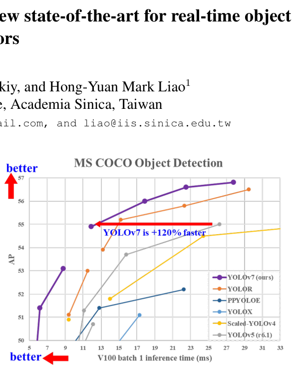
최근 몇 년간 실시간 객체 탐지기는 다양한 엣지 디바이스를 겨냥하여 발전해 왔다. 예를 들어 MCUNet과 NanoDet의 발전은 저전력 단일 칩(low-power single-chip) 환경에서 엣지 CPU의 추론 속도를 향상시키는 데 집중하였다. 반면 YOLOX와 YOLOR 같은 기법들은 다양한 GPU에서의 추론 속도를 높이는 데 주력하였다. 보다 최근에는 실시간 객체 탐지기의 발전이 효율적인 아키텍처(efficient architecture) 설계에 초점을 맞추고 있다. CPU에서 구동 가능한 실시간 객체 탐지기의 설계는 주로 MobileNet, ShuffleNet, 또는 GhostNet을 기반으로 한다. 또 다른 주류인 GPU용 실시간 객체 탐지기들은 대부분 ResNet, DarkNet, 또는 DLA를 사용하고, 여기에 CSPNet 전략을 적용하여 아키텍처를 최적화한다.
본 논문에서 제안하는 방법의 개발 방향은 현재 주류 실시간 객체 탐지기들의 방향과는 다르다. 아키텍처 최적화에 더하여, 제안 방법은 학습 과정(training process)의 최적화에 집중한다. 즉, 학습 비용은 다소 증가할 수 있으나 추론 비용(inference cost)을 전혀 늘리지 않으면서 객체 탐지 정확도를 크게 향상시키는 최적화된 모듈과 최적화 기법들에 초점을 맞춘다. 우리는 이렇게 제안된 모듈과 최적화 기법들을 학습 가능한 Bag-of-Freebies(Trainable bag-of-freebies)라고 부른다.
최근 모델 재매개변수화(model re-parameterization)와 동적 레이블 할당(dynamic label assignment)이 네트워크 학습과 객체 탐지 분야에서 중요한 화두로 떠올랐다. 이러한 새로운 개념들이 제안된 이후, 객체 탐지기의 학습에는 여러 새로운 문제들이 수반되었다. 본 논문에서는 우리가 발견한 새로운 문제점들을 제시하고 이를 해결하기 위한 효과적인 방법을 고안한다. 모델 재매개변수화의 경우, 그래디언트 전파 경로(gradient propagation path) 개념을 바탕으로 서로 다른 네트워크의 계층에 적용 가능한 모델 재매개변수화 전략을 분석하고, 계획된 재매개변수화 모델(planned re-parameterized model)을 제안한다. 또한 동적 레이블 할당 기술을 사용할 때 다중 출력 계층(multiple output layers)을 가진 모델의 학습에서 새로운 문제가 발생함을 발견하였다. 즉, “서로 다른 분기(branch)의 출력에 대해 동적 타깃을 어떻게 할당할 것인가?”라는 문제이다. 이를 해결하기 위해 Coarse-to-Fine 리드 헤드 유도 레이블 할당(coarse-to-fine lead guided label assignment)이라는 새로운 레이블 할당 기법을 제안한다.
본 논문의 기여는 다음과 같이 요약된다:
- (1) 추론 비용을 늘리지 않으면서 실시간 객체 탐지의 정확도를 크게 향상시킬 수 있는 여러 학습 가능한 Bag-of-Freebies 기법을 설계하였다.
- (2) 객체 탐지 기법의 발전에 따라 나타난 두 가지 새로운 문제, 즉 재매개변수화 모듈이 기존 모듈을 어떻게 대체해야 하는지, 그리고 동적 레이블 할당 전략이 서로 다른 출력 계층에 대한 할당을 어떻게 처리해야 하는지를 규명하고 이를 해결할 기법을 제안하였다.
- (3) 파라미터와 연산량을 효과적으로 활용할 수 있는 실시간 객체 탐지기용 확장(extend) 및 복합 스케일링(compound scaling) 기법을 제안하였다.
- (4) 제안한 방법은 기존 최신 실시간 객체 탐지기 대비 파라미터 수를 약 40%, 연산량을 약 50% 효과적으로 줄이면서도 더 빠른 추론 속도와 더 높은 탐지 정확도를 달성한다.
2. 관련 연구 (Related work)
2.1. 실시간 객체 탐지기 (Real-time object detectors)
현재 최신 실시간 객체 탐지기들은 주로 YOLO 계열과 FCOS 계열을 기반으로 한다. 최신 실시간 객체 탐지기가 되기 위해서는 일반적으로 다음과 같은 특성들이 요구된다: (1) 더 빠르고 강력한 네트워크 아키텍처, (2) 더 효과적인 특징 통합(feature integration) 기법, (3) 더 정확한 탐지(detection) 기법, (4) 더 강건한 손실 함수(loss function), (5) 더 효율적인 레이블 할당(label assignment) 기법, 그리고 (6) 더 효율적인 학습 방법. 본 논문에서는 추가 데이터나 대규모 모델을 요구하는 자기지도 학습(self-supervised learning)이나 지식 증류(knowledge distillation) 기법은 탐구하지 않는다. 대신, 위에서 언급한 (4), (5), (6)과 관련된 최신 기법들로부터 파생된 문제들을 해결하기 위한 새로운 학습 가능한 Bag-of-Freebies 기법을 설계한다.
2.2. 모델 재매개변수화 (Model re-parameterization)
모델 재매개변수화(model re-parameterization) 기법은 추론 단계에서 여러 연산 모듈을 하나로 병합한다. 모델 재매개변수화는 일종의 앙상블(ensemble) 기법으로 볼 수 있으며, 모듈 수준 앙상블(module-level ensemble)과 모델 수준 앙상블(model-level ensemble)의 두 범주로 나눌 수 있다. 최종 추론 모델을 얻기 위한 모델 수준 재매개변수화에는 두 가지 일반적인 관행이 있다. 하나는 서로 다른 학습 데이터로 여러 개의 동일한 모델을 학습한 뒤 학습된 여러 모델의 가중치를 평균하는 방법이고, 다른 하나는 서로 다른 반복 횟수(iteration)에서의 모델 가중치를 가중 평균(weighted average)하는 방법이다. 모듈 수준 재매개변수화는 최근 더 활발히 연구되는 주제이다. 이 유형의 기법은 학습 중에는 하나의 모듈을 여러 개의 동일하거나 서로 다른 모듈 분기로 분할하고, 추론 시에는 여러 분기의 모듈들을 완전히 등가인(equivalent) 단일 모듈로 통합한다. 그러나 제안된 모든 재매개변수화 모듈이 다양한 아키텍처에 완벽하게 적용되는 것은 아니다. 이를 염두에 두고, 본 연구에서는 새로운 재매개변수화 모듈을 개발하고 다양한 아키텍처에 맞는 적용 전략을 설계하였다.
2.3. 모델 스케일링 (Model scaling)
모델 스케일링(model scaling)은 이미 설계된 모델의 규모를 키우거나 줄여서(scale up or down) 다양한 컴퓨팅 장치에 맞추는 방법이다. 모델 스케일링 기법은 보통 해상도(입력 이미지 크기), 깊이(계층 수), 너비(채널 수), 스테이지(특징 피라미드 수)와 같은 다양한 스케일링 인자(scaling factor)를 사용하여 네트워크 파라미터 수, 연산량, 추론 속도, 정확도 간의 균형을 맞춘다. 신경망 아키텍처 탐색(NAS, Network Architecture Search)은 널리 쓰이는 모델 스케일링 방법 중 하나로, 복잡한 규칙을 직접 정의하지 않고도 탐색 공간에서 적합한 스케일링 인자를 자동으로 찾을 수 있다. 다만 NAS는 모델 스케일링 인자 탐색을 완료하는 데 막대한 연산 비용이 든다는 단점이 있다. Dollár 등의 연구에서는 스케일링 인자와 파라미터·연산량 간의 관계를 분석하여 직접 규칙을 추정하고 이를 통해 필요한 스케일링 인자를 도출하려 시도하였다.
기존 문헌을 살펴보면 거의 모든 모델 스케일링 기법들이 개별 스케일링 인자를 독립적으로 분석하며, 복합 스케일링(compound scaling) 범주에 속하는 기법조차도 스케일링 인자를 독립적으로 최적화한다. 이는 대부분의 인기 있는 NAS 아키텍처들이 서로 상관관계가 크지 않은 스케일링 인자를 다루기 때문이다. 반면 본 연구에서는 DenseNet이나 VoVNet과 같은 모든 연결(concatenation) 기반 모델이 깊이를 스케일링할 때 일부 계층의 입력 너비가 함께 변한다는 사실을 관찰하였다. 우리가 제안하는 아키텍처 역시 연결 기반이므로, 이 모델을 위한 새로운 복합 스케일링 기법을 설계해야 한다.
3. 아키텍처 (Architecture)
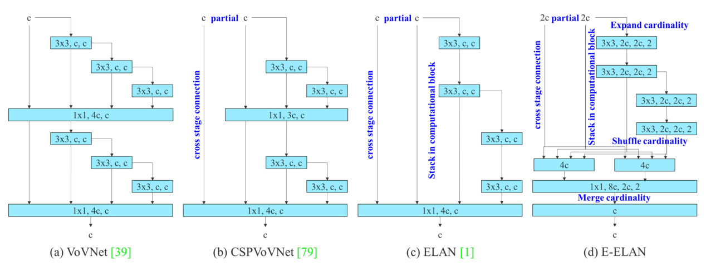
3.1. 확장된 효율적 계층 집계 네트워크 (Extended efficient layer aggregation networks)
효율적인 아키텍처 설계를 다루는 대부분의 문헌에서 주된 고려 사항은 파라미터 수, 연산량, 연산 밀도(computational density) 정도이다. Ma 등은 메모리 접근 비용(memory access cost)의 관점에서 입출력 채널 비율, 아키텍처의 분기 수, 요소별 연산(element-wise operation)이 네트워크 추론 속도에 미치는 영향을 분석하였다. Dollár 등은 모델 스케일링을 수행할 때 활성화(activation), 즉 합성곱 계층 출력 텐서의 원소 수를 추가로 고려하였다. 그림 2(b)의 CSPVoVNet 설계는 VoVNet의 변형이다. CSPVoVNet 아키텍처는 앞서 언급한 기본 설계 요소 외에도, 서로 다른 계층의 가중치가 더 다양한 특징을 학습할 수 있도록 그래디언트 경로(gradient path)를 함께 분석한다. 이러한 그래디언트 분석 접근 방식은 추론을 더 빠르고 정확하게 만든다. 그림 2(c)의 ELAN은 “효율적인 네트워크를 어떻게 설계할 것인가?”라는 설계 전략을 고려하며, 최단·최장 그래디언트 경로(shortest longest gradient path)를 제어함으로써 더 깊은 네트워크가 효과적으로 학습하고 수렴할 수 있다는 결론을 도출하였다. 본 논문에서는 ELAN을 기반으로 한 Extended-ELAN(E-ELAN)을 제안하며, 그 주요 구조는 그림 2(d)에 나타나 있다.
대규모 ELAN에서는 그래디언트 경로 길이와 연산 블록(computational block)의 적층 횟수에 관계없이 일정한 안정 상태(stable state)에 도달한다. 만약 더 많은 연산 블록을 무제한으로 쌓으면 이 안정 상태가 깨져 파라미터 활용률이 떨어질 수 있다. 제안된 E-ELAN은 확장(expand), 셔플(shuffle), 병합 카디널리티(merge cardinality)를 사용하여 기존 그래디언트 경로를 파괴하지 않으면서도 네트워크의 학습 능력을 지속적으로 향상시킨다. 아키텍처 측면에서 E-ELAN은 연산 블록 내부 구조만 변경할 뿐, 전이 계층(transition layer)의 구조는 전혀 바꾸지 않는다. 우리의 전략은 그룹 합성곱(group convolution)을 사용하여 연산 블록의 채널과 카디널리티를 확장하는 것이다. 하나의 연산 계층 내 모든 연산 블록에 동일한 그룹 파라미터와 채널 배수(channel multiplier)를 적용한다. 그런 다음 각 연산 블록이 계산한 특징 맵을 설정된 그룹 파라미터 $g$에 따라 $g$개의 그룹으로 셔플(shuffle)한 뒤 하나로 연결(concatenate)한다. 이때 각 그룹 특징 맵의 채널 수는 기존 아키텍처의 채널 수와 동일해진다. 마지막으로 $g$개 그룹의 특징 맵을 더해 병합 카디널리티(merge cardinality)를 수행한다. E-ELAN은 기존의 ELAN 설계 아키텍처를 유지하면서도 서로 다른 그룹의 연산 블록들이 더 다양한 특징을 학습하도록 유도할 수 있다.
3.2. 연결 기반 모델을 위한 모델 스케일링 (Model scaling for concatenation-based models)
모델 스케일링의 주된 목적은 모델의 일부 속성을 조정하여 다양한 추론 속도 요구 사항을 충족하는 여러 규모의 모델을 생성하는 것이다. 예를 들어 EfficientNet의 스케일링 모델은 너비(width), 깊이(depth), 해상도(resolution)를 고려하며, Scaled-YOLOv4의 스케일링은 스테이지(stage) 수를 조정한다. Dollár 등은 너비 및 깊이 스케일링을 수행할 때 일반 합성곱과 그룹 합성곱이 파라미터 수와 연산량에 미치는 영향을 분석하여 이에 맞는 모델 스케일링 기법을 설계하였다.
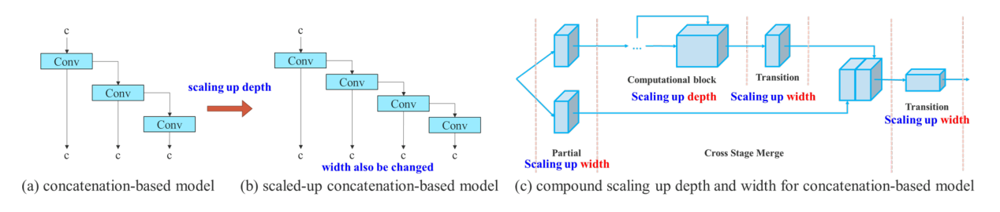
위 기법들은 주로 PlainNet이나 ResNet 같은 아키텍처에 사용된다. 이러한 아키텍처는 스케일 업(scale-up)이나 스케일 다운(scale-down) 시 각 계층의 입력 차수(in-degree)와 출력 차수(out-degree)가 변하지 않으므로, 각 스케일링 인자가 파라미터 수와 연산량에 미치는 영향을 독립적으로 분석할 수 있다. 그러나 이러한 기법을 연결 기반(concatenation-based) 아키텍처에 적용하면, 깊이를 키우거나 줄일 때 연결 기반 연산 블록 바로 뒤에 오는 전이 계층(transition layer)의 입력 차수가 감소하거나 증가함을 그림 3(a)와 (b)처럼 확인할 수 있다.
이러한 현상으로부터 연결 기반 모델에서는 서로 다른 스케일링 인자를 개별적으로 분석할 수 없으며 반드시 함께 고려해야 함을 알 수 있다. 깊이 스케일 업을 예로 들면, 이러한 동작은 전이 계층의 입력 채널과 출력 채널 비율 변화를 유발하여 모델의 하드웨어 활용도를 저하시킬 수 있다. 따라서 우리는 연결 기반 모델에 맞는 복합 모델 스케일링(compound model scaling) 기법을 제안한다. 연산 블록의 깊이 인자(depth factor)를 스케일링할 때 해당 블록의 출력 채널 변화량도 함께 계산해야 한다. 그런 다음 동일한 변화량만큼 전이 계층에 너비 인자(width factor) 스케일링을 수행하며, 그 결과는 그림 3(c)와 같다. 제안된 복합 스케일링 기법은 모델이 초기 설계 시 가졌던 특성을 보존하고 최적의 구조를 유지할 수 있게 한다.
4. 학습 가능한 Bag-of-Freebies (Trainable bag-of-freebies)
4.1. 계획된 재매개변수화 합성곱 (Planned re-parameterized convolution)
RepConv가 VGG에서는 뛰어난 성능을 거두었으나, 이를 ResNet이나 DenseNet 등 다른 아키텍처에 직접 적용하면 정확도가 크게 하락한다. 본 연구에서는 그래디언트 흐름 전파 경로(gradient flow propagation paths)를 이용하여 재매개변수화 합성곱이 서로 다른 네트워크와 어떻게 결합되어야 하는지 분석하고, 이에 따라 계획된 재매개변수화 합성곱(planned re-parameterized convolution)을 설계하였다.
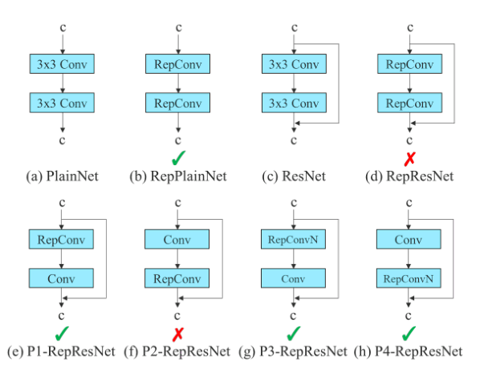
RepConvN으로 대체할 수 있다.
RepConv는 실제로 하나의 합성곱 계층 내부에 $3 \times 3$ 합성곱, $1 \times 1$ 합성곱, 그리고 항등 연결(identity connection)을 결합한 구조이다. RepConv와 다양한 아키텍처의 조합 및 해당 성능을 분석한 결과, RepConv 내부의 항등 연결이 ResNet의 잔차 연결(residual)이나 DenseNet의 연결(concatenation)이 서로 다른 특징 맵에 제공하는 그래디언트 다양성(diversity of gradients)을 파괴한다는 점을 발견하였다. 이러한 이유로 우리는 계획된 재매개변수화 합성곱 아키텍처를 설계할 때 항등 연결을 제거한 RepConv인 RepConvN을 사용한다. 즉, 잔차 연결이나 연결이 존재하는 합성곱 계층을 재매개변수화 합성곱으로 대체할 때는 항등 연결이 없어야 한다. 그림 4는 PlainNet과 ResNet에 적용된 우리의 “계획된 재매개변수화 합성곱” 예시를 보여준다. 잔차 기반 모델 및 연결 기반 모델에서의 전체 실험 결과는 절제 연구(ablation study) 절에서 제시한다.
4.2. 보조 헤드용 거친 레이블과 리드 헤드용 정밀 레이블 손실 (Coarse for auxiliary and fine for lead loss)
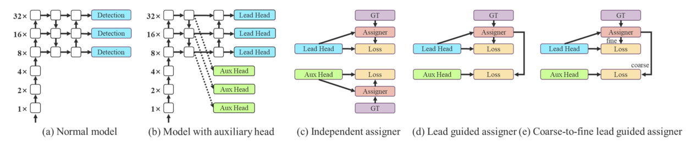
심층 지도 학습(deep supervision)은 깊은 네트워크를 학습할 때 자주 쓰이는 기법으로, 네트워크 중간 계층에 추가적인 보조 헤드(auxiliary head)를 두고 보조 손실(assistant loss)을 가이드로 삼아 얕은 계층의 가중치를 학습시키는 것이 핵심 개념이다. ResNet이나 DenseNet처럼 일반적으로 수렴이 잘 되는 아키텍처에서도 심층 지도 학습은 다양한 과제에서 모델 성능을 크게 향상시킬 수 있다. 그림 5(a)와 (b)는 각각 심층 지도 학습을 “적용하지 않은” 경우와 “적용한” 객체 탐지기 아키텍처를 보여준다. 본 논문에서는 최종 출력을 담당하는 헤드를 리드 헤드(lead head)라 부르고, 학습을 보조하는 데 사용되는 헤드를 보조 헤드(auxiliary head)라 부른다.
다음으로 레이블 할당(label assignment) 문제를 논의하고자 한다. 과거 심층 네트워크 학습에서는 레이블 할당이 주로 정답(ground truth)을 직접 참조하여 주어진 규칙에 따라 하드 레이블(hard label)을 생성하였다. 그러나 최근 객체 탐지 분야에서는 네트워크가 출력한 예측의 품질과 분포를 정답과 함께 고려하고 계산 및 최적화 기법을 적용하여 신뢰할 수 있는 소프트 레이블(soft label)을 생성하는 경우가 많다. 예를 들어 YOLO는 바운딩 박스 회귀 예측과 정답 간의 IoU를 객체성(objectness)의 소프트 레이블로 사용한다. 본 논문에서는 네트워크 예측 결과와 정답을 함께 고려하여 소프트 레이블을 할당하는 메커니즘을 “레이블 할당기(label assigner)”라고 부른다.
심층 지도 학습은 보조 헤드든 리드 헤드든 관계없이 타깃 목표에 대해 학습되어야 한다. 소프트 레이블 할당기 관련 기법을 개발하던 중, 우리는 우연히 “보조 헤드와 리드 헤드에 소프트 레이블을 어떻게 할당해야 하는가?”라는 새로운 파생 문제를 발견하였다. 우리가 아는 한 기존 문헌에서는 이 문제를 아직 탐구한 바가 없다. 현재 가장 널리 쓰이는 방식의 결과는 그림 5(c)에 나타나 있듯, 보조 헤드와 리드 헤드를 분리하여 각자의 예측 결과와 정답을 이용해 독립적으로 레이블 할당을 수행하는 것이다. 반면 본 논문에서 제안하는 기법은 리드 헤드 예측(lead head prediction)으로 보조 헤드와 리드 헤드 모두를 유도(guide)하는 새로운 레이블 할당 기법이다. 다시 말해, 리드 헤드의 예측을 가이드로 삼아 보조 헤드와 리드 헤드 학습에 각각 사용되는 Coarse-to-Fine 계층적 레이블을 생성한다. 제안된 두 가지 심층 지도 학습 레이블 할당 전략은 각각 그림 5(d)와 (e)에 제시되어 있다.
리드 헤드 유도 레이블 할당기(Lead head guided label assigner)는 주로 리드 헤드의 예측 결과와 정답을 기반으로 계산하며 최적화 과정을 통해 소프트 레이블을 생성한다. 이 소프트 레이블 집합은 보조 헤드와 리드 헤드 모두의 타깃 학습 모델로 사용된다. 이렇게 하는 이유는 리드 헤드가 상대적으로 강한 학습 능력을 갖추고 있으므로, 그로부터 생성된 소프트 레이블이 원본 데이터와 타깃 간의 분포 및 상관관계를 더 잘 대표하기 때문이다. 나아가 이러한 학습은 일종의 일반화된 잔차 학습(generalized residual learning)으로 볼 수 있다. 더 얕은 보조 헤드가 리드 헤드가 이미 학습한 정보를 직접 학습하도록 함으로써, 리드 헤드는 아직 학습되지 않은 잔차 정보(residual information)를 학습하는 데 더욱 집중할 수 있게 된다.
Coarse-to-Fine 리드 헤드 유도 레이블 할당기(Coarse-to-fine lead head guided label assigner) 역시 리드 헤드의 예측 결과와 정답을 사용하여 소프트 레이블을 생성한다. 다만 이 과정에서는 두 가지 서로 다른 소프트 레이블 집합, 즉 거친 레이블(coarse label)과 정밀 레이블(fine label)을 생성한다. 여기서 정밀 레이블은 리드 헤드 유도 레이블 할당기가 생성한 소프트 레이블과 동일하며, 거친 레이블은 양성 샘플 할당 과정의 제약을 완화하여 더 많은 그리드(grid)가 양성 타깃으로 취급되도록 함으로써 생성된다. 그 이유는 보조 헤드의 학습 능력이 리드 헤드만큼 강하지 않기 때문에, 학습해야 할 정보가 손실되는 것을 방지하고자 객체 탐지 과제에서 보조 헤드의 재현율(recall)을 최적화하는 데 초점을 맞추기 위함이다. 리드 헤드의 출력에서는 높은 재현율 결과 중에서 높은 정밀도(high precision) 결과를 걸러내어 최종 출력으로 삼을 수 있다. 다만 거친 레이블의 추가 가중치가 정밀 레이블에 가까워지면 최종 예측에서 나쁜 사전 분포(bad prior)를 유발할 수 있음에 유의해야 한다. 따라서 추가적인 거친 양성 그리드가 미치는 영향을 줄이기 위해 디코더에 제약을 두어, 추가된 거친 양성 그리드가 완벽한 소프트 레이블을 생성하지 못하도록 제한한다. 앞서 언급한 메커니즘은 학습 과정에서 정밀 레이블과 거친 레이블의 중요도가 동적으로 조정되도록 하며, 정밀 레이블의 최적화 가능한 상한(upper bound)이 항상 거친 레이블보다 높도록 보장한다.
4.3. 기타 학습 가능한 Bag-of-Freebies (Other trainable bag-of-freebies)
이 절에서는 학습에 사용한 몇 가지 학습 가능한 Bag-of-Freebies를 나열한다. 이 기법들은 본 연구의 학습에 활용된 트릭들이며, 원래 개념 자체는 다른 연구에서 제안된 것이다. 이러한 기법들의 세부 학습 설정은 부록(Appendix)에 기술되며, 다음을 포함한다: (1) conv-bn-activation 토폴로지에서의 배치 정규화(Batch Normalization): 배치 정규화 계층을 합성곱 계층에 직접 연결한다. 목적은 추론 단계에서 배치 정규화의 평균과 분산을 합성곱 계층의 편향(bias)과 가중치(weight)에 통합하는 것이다. (2) YOLOR의 암묵적 지식(Implicit knowledge)을 덧셈 및 곱셈 방식으로 합성곱 특징 맵과 결합: YOLOR의 암묵적 지식은 추론 단계에서 사전 계산을 통해 벡터로 단순화할 수 있으며, 이 벡터는 이전 또는 이후 합성곱 계층의 편향 및 가중치와 결합될 수 있다. (3) EMA 모델: EMA(지수 이동 평균)는 Mean Teacher에서 사용된 기법으로, 본 시스템에서는 순수하게 EMA 모델을 최종 추론 모델로 사용한다.
5. 실험 (Experiments)
5.1. 실험 설정 (Experimental setup)
본 연구에서는 제안한 객체 탐지 기법을 검증하기 위해 Microsoft COCO 데이터셋을 사용하여 실험을 수행하였다. 모든 실험은 사전 학습된 모델(pre-trained models)을 전혀 사용하지 않고, 처음부터(from scratch) 학습되었다. 개발 과정에서는 train 2017 세트로 학습하고, val 2017 세트로 검증 및 하이퍼파라미터 선택을 수행하였다. 최종적으로 test 2017 세트에서 객체 탐지 성능을 평가하여 최신 객체 탐지 알고리즘들과 비교하였다. 세부 학습 파라미터 설정은 부록에 기술되어 있다.
본 연구에서는 엣지(edge) GPU, 일반(normal) GPU, 클라우드(cloud) GPU를 위한 기본 모델을 각각 설계하였으며, 이를 YOLOv7-tiny, YOLOv7, YOLOv7-W6이라 명명하였다. 동시에 다양한 서비스 요구 사항에 맞춰 기본 모델에 모델 스케일링을 적용하여 여러 유형의 모델을 구축하였다. YOLOv7의 경우 넥(neck)에 스택 스케일링(stack scaling)을 수행하고 제안한 복합 스케일링 기법으로 전체 모델의 깊이와 너비를 스케일 업하여 YOLOv7-X를 얻었다. YOLOv7-W6에 대해서는 새로 제안한 복합 스케일링 기법을 적용해 YOLOv7-E6와 YOLOv7-D6를 생성하였다. 또한 YOLOv7-E6에 제안한 E-ELAN을 적용하여 YOLOv7-E6E를 완성하였다. YOLOv7-tiny는 엣지 GPU 지향 아키텍처이므로 활성화 함수로 Leaky ReLU를 사용하고, 나머지 모델들은 SiLU를 활성화 함수로 사용한다. 각 모델의 스케일링 인자는 부록에서 자세히 설명한다.
5.2. 베이스라인 비교 (Baselines)
이전 버전의 YOLO 및 최신 객체 탐지기인 YOLOR을 베이스라인으로 선정하였다. 표 1은 동일한 설정으로 학습된 베이스라인 모델들과 제안한 YOLOv7 모델들의 비교 결과를 보여준다.
| 모델 (Model) | #Param. | FLOPs | Size | $AP^{val}$ | $AP^{val}_{50}$ | $AP^{val}_{75}$ | $AP^{val}_{S}$ | $AP^{val}_{M}$ | $AP^{val}_{L}$ |
|---|---|---|---|---|---|---|---|---|---|
| YOLOv4 [3] | 64.4M | 142.8G | 640 | 49.7% | 68.2% | 54.3% | 32.9% | 54.8% | 63.7% |
| YOLOR-u5 (r6.1) [81] | 46.5M | 109.1G | 640 | 50.2% | 68.7% | 54.6% | 33.2% | 55.5% | 63.7% |
| YOLOv4-CSP [79] | 52.9M | 120.4G | 640 | 50.3% | 68.6% | 54.9% | 34.2% | 55.6% | 65.1% |
| YOLOR-CSP [81] | 52.9M | 120.4G | 640 | 50.8% | 69.5% | 55.3% | 33.7% | 56.0% | 65.4% |
| YOLOv7 | 36.9M | 104.7G | 640 | 51.2% | 69.7% | 55.5% | 35.2% | 56.0% | 66.7% |
| 개선폭 (improvement) | -43% | -15% | - | +0.4 | +0.2 | +0.2 | +1.5 | = | +1.3 |
| YOLOR-CSP-X [81] | 96.9M | 226.8G | 640 | 52.7% | 71.3% | 57.4% | 36.3% | 57.5% | 68.3% |
| YOLOv7-X | 71.3M | 189.9G | 640 | 52.9% | 71.1% | 57.5% | 36.9% | 57.7% | 68.6% |
| 개선폭 (improvement) | -36% | -19% | - | +0.2 | -0.2 | +0.1 | +0.6 | +0.2 | +0.3 |
| YOLOv4-tiny [79] | 6.1 | 6.9 | 416 | 24.9% | 42.1% | 25.7% | 8.7% | 28.4% | 39.2% |
| YOLOv7-tiny | 6.2 | 5.8 | 416 | 35.2% | 52.8% | 37.3% | 15.7% | 38.0% | 53.4% |
| 개선폭 (improvement) | +2% | -19% | - | +10.3 | +10.7 | +11.6 | +7.0 | +9.6 | +14.2 |
| YOLOv4-tiny-3l [79] | 8.7 | 5.2 | 320 | 30.8% | 47.3% | 32.2% | 10.9% | 31.9% | 51.5% |
| YOLOv7-tiny | 6.2 | 3.5 | 320 | 30.8% | 47.3% | 32.2% | 10.0% | 31.9% | 52.2% |
| 개선폭 (improvement) | -39% | -49% | - | = | = | = | -0.9 | = | +0.7 |
| YOLOR-E6 [81] | 115.8M | 683.2G | 1280 | 55.7% | 73.2% | 60.7% | 40.1% | 60.4% | 69.2% |
| YOLOv7-E6 | 97.2M | 515.2G | 1280 | 55.9% | 73.5% | 61.1% | 40.6% | 60.3% | 70.0% |
| 개선폭 (improvement) | -19% | -33% | - | +0.2 | +0.3 | +0.4 | +0.5 | -0.1 | +0.8 |
| YOLOR-D6 [81] | 151.7M | 935.6G | 1280 | 56.1% | 73.9% | 61.2% | 42.4% | 60.5% | 69.9% |
| YOLOv7-D6 | 154.7M | 806.8G | 1280 | 56.3% | 73.8% | 61.4% | 41.3% | 60.6% | 70.1% |
| YOLOv7-E6E | 151.7M | 843.2G | 1280 | 56.8% | 74.4% | 62.1% | 40.8% | 62.1% | 70.6% |
| 개선폭 (improvement) | = | -11% | - | +0.7 | +0.5 | +0.9 | -1.6 | +1.6 | +0.7 |
결과에서 볼 수 있듯 YOLOv4와 비교할 때 YOLOv7은 파라미터 수가 75% 적고 연산량이 36% 적으면서도 AP는 1.5% 더 높다. 최신 모델인 YOLOR-CSP와 비교하면 YOLOv7은 파라미터가 43% 적고 연산량이 15% 적으면서 AP가 0.4% 더 높다. 경량(tiny) 모델의 성능에서는 YOLOv4-tiny-3l과 비교했을 때 YOLOv7-tiny가 파라미터 수를 39%, 연산량을 49% 줄이면서도 동일한 AP를 유지하였다. 클라우드 GPU용 모델에서도 본 모델은 파라미터 수를 19%, 연산량을 33% 줄이면서 여전히 더 높은 AP를 달성하였다.
5.3. 최신 모델과의 비교 (Comparison with state-of-the-arts)
제안된 기법을 일반 GPU 및 모바일 GPU용 최신 객체 탐지기들과 비교하였으며, 결과는 표 2에 정리되어 있다. 표 2의 결과로부터 제안한 기법이 종합적으로 가장 뛰어난 속도-정확도 트레이드오프(speed-accuracy trade-off)를 보임을 알 수 있다. YOLOv7-tiny-SiLU를 YOLOv5-N (r6.1)과 비교하면, 본 모델은 속도가 127 fps 더 빠르고 AP 정확도가 10.7% 더 높다. 또한 YOLOv7은 161 fps의 프레임 속도에서 51.4% AP를 기록한 반면, 동일한 AP를 내는 PPYOLOE-L의 프레임 속도는 78 fps에 불과하다. 파라미터 사용량 면에서도 YOLOv7은 PPYOLOE-L보다 41% 더 적다. 114 fps의 추론 속도를 내는 YOLOv7-X를 99 fps의 YOLOv5-L (r6.1)과 비교하면 YOLOv7-X가 AP를 3.9% 향상시킨다. 비슷한 규모의 YOLOv5-X (r6.1)와 비교할 때는 YOLOv7-X의 추론 속도가 31 fps 더 빠르다. 게다가 파라미터 수와 연산량 면에서 YOLOv7-X는 YOLOv5-X (r6.1) 대비 파라미터를 22%, 연산량을 8% 줄이면서도 AP는 2.2% 더 높다.
입력 해상도 1280에서 YOLOv7과 YOLOR을 비교하면, YOLOv7-W6의 추론 속도는 YOLOR-P6보다 8 fps 더 빠르고 탐지율 또한 1% AP 상승한다. YOLOv7-E6와 YOLOv5-X6 (r6.1)의 비교에서는 전자가 후자보다 0.9%의 AP 이득을 얻고 파라미터는 45%, 연산량은 63% 적으며 추론 속도는 47% 향상된다. YOLOv7-D6는 YOLOR-E6와 유사한 추론 속도를 보이지만 AP를 0.8% 개선한다. YOLOv7-E6E는 YOLOR-D6와 유사한 추론 속도를 가지면서도 AP를 0.3% 향상시킨다.
| 모델 (Model) | #Param. | FLOPs | Size | FPS | $AP^{test} / AP^{val}$ | $AP^{test}_{50}$ | $AP^{test}_{75}$ | $AP^{test}_{S}$ | $AP^{test}_{M}$ | $AP^{test}_{L}$ |
|---|---|---|---|---|---|---|---|---|---|---|
| YOLOX-S [21] | 9.0M | 26.8G | 640 | 102 | 40.5% / 40.5% | - | - | - | - | - |
| YOLOX-M [21] | 25.3M | 73.8G | 640 | 81 | 47.2% / 46.9% | - | - | - | - | - |
| YOLOX-L [21] | 54.2M | 155.6G | 640 | 69 | 50.1% / 49.7% | - | - | - | - | - |
| YOLOX-X [21] | 99.1M | 281.9G | 640 | 58 | 51.5% / 51.1% | - | - | - | - | - |
| PPYOLOE-S [85] | 7.9M | 17.4G | 640 | 208 | 43.1% / 42.7% | 60.5% | 46.6% | 23.2% | 46.4% | 56.9% |
| PPYOLOE-M [85] | 23.4M | 49.9G | 640 | 123 | 48.9% / 48.6% | 66.5% | 53.0% | 28.6% | 52.9% | 63.8% |
| PPYOLOE-L [85] | 52.2M | 110.1G | 640 | 78 | 51.4% / 50.9% | 68.9% | 55.6% | 31.4% | 55.3% | 66.1% |
| PPYOLOE-X [85] | 98.4M | 206.6G | 640 | 45 | 52.2% / 51.9% | 69.9% | 56.5% | 33.3% | 56.3% | 66.4% |
| YOLOv5-N (r6.1) [23] | 1.9M | 4.5G | 640 | 159 | - / 28.0% | - | - | - | - | - |
| YOLOv5-S (r6.1) [23] | 7.2M | 16.5G | 640 | 156 | - / 37.4% | - | - | - | - | - |
| YOLOv5-M (r6.1) [23] | 21.2M | 49.0G | 640 | 122 | - / 45.4% | - | - | - | - | - |
| YOLOv5-L (r6.1) [23] | 46.5M | 109.1G | 640 | 99 | - / 49.0% | - | - | - | - | - |
| YOLOv5-X (r6.1) [23] | 86.7M | 205.7G | 640 | 83 | - / 50.7% | - | - | - | - | - |
| YOLOR-CSP [81] | 52.9M | 120.4G | 640 | 106 | 51.1% / 50.8% | 69.6% | 55.7% | 31.7% | 55.3% | 64.7% |
| YOLOR-CSP-X [81] | 96.9M | 226.8G | 640 | 87 | 53.0% / 52.7% | 71.4% | 57.9% | 33.7% | 57.1% | 66.8% |
| YOLOv7-tiny-SiLU | 6.2M | 13.8G | 640 | 286 | 38.7% / 38.7% | 56.7% | 41.7% | 18.8% | 42.4% | 51.9% |
| YOLOv7 | 36.9M | 104.7G | 640 | 161 | 51.4% / 51.2% | 69.7% | 55.9% | 31.8% | 55.5% | 65.0% |
| YOLOv7-X | 71.3M | 189.9G | 640 | 114 | 53.1% / 52.9% | 71.2% | 57.8% | 33.8% | 57.1% | 67.4% |
| YOLOv5-N6 (r6.1) [23] | 3.2M | 18.4G | 1280 | 123 | - / 36.0% | - | - | - | - | - |
| YOLOv5-S6 (r6.1) [23] | 12.6M | 67.2G | 1280 | 122 | - / 44.8% | - | - | - | - | - |
| YOLOv5-M6 (r6.1) [23] | 35.7M | 200.0G | 1280 | 90 | - / 51.3% | - | - | - | - | - |
| YOLOv5-L6 (r6.1) [23] | 76.8M | 445.6G | 1280 | 63 | - / 53.7% | - | - | - | - | - |
| YOLOv5-X6 (r6.1) [23] | 140.7M | 839.2G | 1280 | 38 | - / 55.0% | - | - | - | - | - |
| YOLOR-P6 [81] | 37.2M | 325.6G | 1280 | 76 | 53.9% / 53.5% | 71.4% | 58.9% | 36.1% | 57.7% | 65.6% |
| YOLOR-W6 [81] | 79.8M | 453.2G | 1280 | 66 | 55.2% / 54.8% | 72.7% | 60.5% | 37.7% | 59.1% | 67.1% |
| YOLOR-E6 [81] | 115.8M | 683.2G | 1280 | 45 | 55.8% / 55.7% | 73.4% | 61.1% | 38.4% | 59.7% | 67.7% |
| YOLOR-D6 [81] | 151.7M | 935.6G | 1280 | 34 | 56.5% / 56.1% | 74.1% | 61.9% | 38.9% | 60.4% | 68.7% |
| YOLOv7-W6 | 70.4M | 360.0G | 1280 | 84 | 54.9% / 54.6% | 72.6% | 60.1% | 37.3% | 58.7% | 67.1% |
| YOLOv7-E6 | 97.2M | 515.2G | 1280 | 56 | 56.0% / 55.9% | 73.5% | 61.2% | 38.0% | 59.9% | 68.4% |
| YOLOv7-D6 | 154.7M | 806.8G | 1280 | 44 | 56.6% / 56.3% | 74.0% | 61.8% | 38.8% | 60.1% | 69.5% |
| YOLOv7-E6E | 151.7M | 843.2G | 1280 | 36 | 56.8% / 56.8% | 74.4% | 62.1% | 39.3% | 60.5% | 69.0% |
1 FLOPs는 $640 \times 640$ 또는 $1280 \times 1280$과 같은 정사각형 입력 해상도를 기준으로 계산되었다.
2 추론 시간은 긴 변이 640 또는 1280이 되도록 레터박스(letterbox) 리사이즈한 입력 이미지를 사용하여 측정되었다. (주: 원문 YOLOR-W6의 파라미터 항목은 79.8G로 오기되어 있으나 79.8M에 해당함.)
5.4. 절제 연구 (Ablation study)
5.4.1. 제안된 복합 스케일링 기법 (Proposed compound scaling method)
표 3은 서로 다른 모델 스케일링 전략을 사용하여 모델을 확장했을 때 얻어진 결과를 보여준다. 그중 우리가 제안한 복합 스케일링(compound scaling) 기법은 연산 블록의 깊이를 1.5배, 전이 블록(transition block)의 너비를 1.25배로 스케일 업하는 방식이다. 제안 기법을 너비만 스케일 업한 방법과 비교하면, 더 적은 파라미터와 연산량으로도 AP를 0.5% 향상시킬 수 있다. 또한 깊이만 스케일 업한 방법과 비교하면 파라미터 수를 2.9%, 연산량을 1.2%만 늘리고도 AP를 0.2% 개선할 수 있다. 표 3의 결과에서 알 수 있듯이 제안된 복합 스케일링 전략은 파라미터와 연산량을 훨씬 더 효율적으로 활용한다.
| 모델 (Model) | #Param. | FLOPs | Size | $AP^{val}$ | $AP^{val}_{50}$ | $AP^{val}_{75}$ |
|---|---|---|---|---|---|---|
| base (v7-X light) | 47.0M | 125.5G | 640 | 51.7% | 70.1% | 56.0% |
| width only (1.25 w) | 73.4M | 195.5G | 640 | 52.4% | 70.9% | 57.1% |
| depth only (2.0 d) | 69.3M | 187.6G | 640 | 52.7% | 70.8% | 57.3% |
| compound (v7-X) | 71.3M | 189.9G | 640 | 52.9% | 71.1% | 57.5% |
| 개선폭 (improvement) | - | - | - | +1.2 | +1.0 | +1.5 |
5.4.2. 제안된 계획된 재매개변수화 모델 (Proposed planned re-parameterized model)
제안한 계획된 재매개변수화 모델(planned re-parameterized model)의 일반성을 검증하기 위해 연결 기반 모델(concatenation-based model)과 잔차 기반 모델(residual-based model) 각각에 적용하여 검증하였다. 검증 대상으로 선택한 연결 기반 모델과 잔차 기반 모델은 각각 3-stacked ELAN과 CSPDarknet이다.
연결 기반 모델 실험에서는 3-stacked ELAN의 서로 다른 위치에 있는 $3 \times 3$ 합성곱 계층을 RepConv로 대체하였으며, 세부 구성은 그림 6과 같다. 표 4에 제시된 결과에서 볼 수 있듯이, 더 높은 AP 값들은 모두 우리가 제안한 계획된 재매개변수화 모델에서 나타났다.
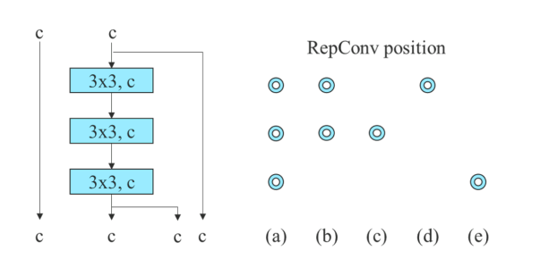
| 모델 (Model) | $AP^{val}$ | $AP^{val}_{50}$ | $AP^{val}_{75}$ | $AP^{val}_{S}$ | $AP^{val}_{M}$ | $AP^{val}_{L}$ |
|---|---|---|---|---|---|---|
| base (3-S ELAN) | 52.26% | 70.41% | 56.77% | 35.81% | 57.00% | 67.59% |
| Figure 6 (a) | 52.18% | 70.34% | 56.90% | 35.71% | 56.83% | 67.51% |
| Figure 6 (b) | 52.30% | 70.30% | 56.92% | 35.76% | 56.95% | 67.74% |
| Figure 6 (c) | 52.33% | 70.56% | 56.91% | 35.90% | 57.06% | 67.50% |
| Figure 6 (d) | 52.17% | 70.32% | 56.82% | 35.33% | 57.06% | 68.09% |
| Figure 6 (e) | 52.23% | 70.20% | 56.81% | 35.34% | 56.97% | 66.88% |
잔차 기반 모델을 다루는 실험에서는 기존의 dark block에 본 연구의 설계 전략에 부합하는 $3 \times 3$ 합성곱 블록 배치가 없었으므로, 실험을 위해 그림 7과 같은 구조의 역전된 dark block(reversed dark block)을 추가로 설계하였다. dark block을 사용한 CSPDarknet과 reversed dark block을 사용한 CSPDarknet은 파라미터 수와 연산량이 완전히 동일하므로 공정한 비교가 가능하다. 표 5에 나타난 실험 결과는 제안된 계획된 재매개변수화 모델이 잔차 기반 모델에서도 동일하게 효과적임을 명확히 확인해 준다. 아울러 RepCSPResNet의 설계 역시 본 연구의 설계 패턴과 부합함을 확인하였다.
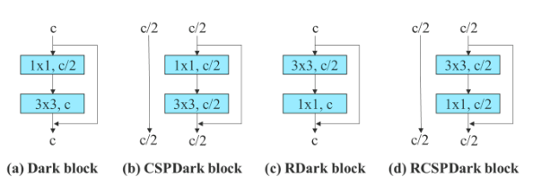
| 모델 (Model) | $AP^{val}$ | $AP^{val}_{50}$ | $AP^{val}_{75}$ | $AP^{val}_{S}$ | $AP^{val}_{M}$ | $AP^{val}_{L}$ |
|---|---|---|---|---|---|---|
| base (YOLOR-W6) | 54.82% | 72.39% | 59.95% | 39.68% | 59.38% | 68.30% |
| RepCSP | 54.67% | 72.50% | 59.58% | 40.22% | 59.61% | 67.87% |
| RCSP | 54.36% | 71.95% | 59.54% | 40.15% | 59.02% | 67.44% |
| RepRCSP | 54.85% | 72.51% | 60.08% | 40.53% | 59.52% | 68.06% |
| base (YOLOR-CSP) | 50.81% | 69.47% | 55.28% | 33.74% | 56.01% | 65.38% |
| RepRCSP | 50.91% | 69.54% | 55.55% | 34.44% | 55.74% | 65.46% |
5.4.3. 보조 헤드를 위한 제안된 보조 손실 (Proposed assistant loss for auxiliary head)
보조 헤드용 보조 손실(assistant loss) 실험에서는 리드 헤드와 보조 헤드에 대한 일반적인 독립 레이블 할당(independent label assignment) 방식과 본 논문에서 제안한 두 가지 리드 헤드 유도 레이블 할당(lead guided label assignment) 방식을 비교하였다. 모든 비교 결과는 표 6에 제시되어 있다. 표 6의 결과에서 볼 수 있듯이, 보조 손실을 추가한 모든 모델이 전반적인 성능을 크게 향상시켰다. 게다가 제안된 리드 헤드 유도 레이블 할당 전략은 $AP$, $AP_{50}$, $AP_{75}$ 모든 지표에서 일반적인 독립 레이블 할당 전략보다 우수한 성능을 보였다. 특히 우리가 제안한 보조 헤드용 거친 레이블과 리드 헤드용 정밀 레이블(coarse-to-fine lead guided) 할당 전략은 모든 경우에서 최고 성능을 달성하였다. 그림 8에는 서로 다른 기법들이 보조 헤드와 리드 헤드에서 예측한 객체성 맵(objectness map)이 나타나 있다. 그림 8로부터 보조 헤드가 리드 헤드 유도 소프트 레이블을 학습하면 일관된 타깃으로부터 리드 헤드가 잔차 정보(residual information)를 추출하는 데 실제로 도움이 됨을 확인할 수 있다.
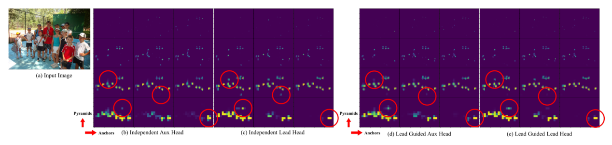
| 모델 (Model) | Size | $AP^{val}$ | $AP^{val}_{50}$ | $AP^{val}_{75}$ |
|---|---|---|---|---|
| base (v7-E6) | 1280 | 55.6% | 73.2% | 60.7% |
| independent | 1280 | 55.8% | 73.4% | 60.9% |
| lead guided | 1280 | 55.9% | 73.5% | 61.0% |
| coarse-to-fine lead guided | 1280 | 55.9% | 73.5% | 61.1% |
| 개선폭 (improvement) | - | +0.3 | +0.3 | +0.4 |
표 7에서는 제안된 Coarse-to-Fine 리드 헤드 유도 레이블 할당 기법이 보조 헤드의 디코더에 미치는 영향을 추가로 분석하였다. 즉, 상한 제약(upper bound constraint) 도입 여부에 따른 결과를 비교하였다. 표의 수치로 판단할 때, 객체 중심으로부터의 거리에 의해 객체성(objectness)의 상한을 제한하는 방식이 더 우수한 성능을 달성함을 알 수 있다.
| 모델 (Model) | Size | $AP^{val}$ | $AP^{val}_{50}$ | $AP^{val}_{75}$ |
|---|---|---|---|---|
| base (v7-E6) | 1280 | 55.6% | 73.2% | 60.7% |
| aux without constraint | 1280 | 55.9% | 73.5% | 61.0% |
| aux with constraint | 1280 | 55.9% | 73.5% | 61.1% |
| 개선폭 (improvement) | - | +0.3 | +0.3 | +0.4 |
제안된 YOLOv7은 여러 피라미드(multiple pyramids)를 사용하여 객체 탐지 결과를 공동으로 예측하므로, 학습을 위해 중간 계층의 피라미드에 보조 헤드를 직접 연결할 수 있다. 이러한 유형의 학습은 다음 단계 피라미드 예측에서 손실될 수 있는 정보를 보완해 준다. 이러한 이유로 우리는 제안된 E-ELAN 아키텍처에 부분 보조 헤드(partial auxiliary head)를 설계하였다. 우리의 접근 방식은 카디널리티 병합(merging cardinality) 직전의 특징 맵 세트 중 하나 뒤에 보조 헤드를 연결하는 것이며, 이 연결 방식은 새로 생성된 특징 맵 세트의 가중치가 보조 손실에 의해 직접 업데이트되지 않도록 한다. 이러한 설계는 리드 헤드의 각 피라미드가 여전히 다양한 크기의 객체로부터 정보를 얻을 수 있게 해준다. 표 8은 두 가지 방식, 즉 coarse-to-fine lead guided 방식과 partial coarse-to-fine lead guided 방식을 사용했을 때 얻은 결과를 보여준다. 분명히 partial coarse-to-fine lead guided 방식이 더 우수한 보조 효과를 나타낸다.
| 모델 (Model) | Size | $AP^{val}$ | $AP^{val}_{50}$ | $AP^{val}_{75}$ |
|---|---|---|---|---|
| base (v7-E6E) | 1280 | 56.3% | 74.0% | 61.5% |
| aux | 1280 | 56.5% | 74.0% | 61.6% |
| partial aux | 1280 | 56.8% | 74.4% | 62.1% |
| 개선폭 (improvement) | - | +0.5 | +0.4 | +0.6 |
6. 결론 (Conclusions)
본 논문에서는 새로운 실시간 객체 탐지기 아키텍처와 이에 상응하는 모델 스케일링 기법을 제안하였다. 나아가 객체 탐지 기법의 발전 과정에서 새로운 연구 주제들이 파생됨을 확인하였다. 연구 과정에서 재매개변수화 모듈의 교체 문제와 동적 레이블 할당의 배분 문제를 발견하였으며, 이를 해결하기 위해 객체 탐지 정확도를 높이는 학습 가능한 Bag-of-Freebies 기법을 제안하였다. 이를 바탕으로 최신 최고 성능(state-of-the-art)을 달성하는 YOLOv7 객체 탐지 시스템 시리즈를 개발하였다.
7. 감사의 글 (Acknowledgements)
저자들은 연산 및 저장 자원을 제공해 준 National Center for High-performance Computing (NCHC)에 감사를 표한다.
8. 추가 비교 (More comparison)
YOLOv7은 5 FPS에서 160 FPS 구간의 알려진 모든 객체 탐지기를 속도와 정확도에서 모두 능가하며, V100 GPU 기준 30 FPS 이상으로 동작하는 모든 실시간 객체 탐지기 중 가장 높은 56.8% AP test-dev / 56.8% AP min-val을 달성하였다. YOLOv7-E6 객체 탐지기(V100에서 56 FPS, 55.9% AP)는 트랜스포머 기반 탐지기인 SWIN-L Cascade-Mask R-CNN(A100에서 9.2 FPS, 53.9% AP)보다 속도 면에서 509%, 정확도 면에서 2% 앞서며, 합성곱 기반 탐지기인 ConvNeXt-XL Cascade-Mask R-CNN(A100에서 8.6 FPS, 55.2% AP)보다 속도 면에서 551%, 정확도 면에서 0.7% AP 우수하다. 또한 YOLOv7은 YOLOR, YOLOX, Scaled-YOLOv4, YOLOv5, DETR, Deformable DETR, DINO-5scale-R50, ViT-Adapter-B 등 수많은 객체 탐지기를 속도와 정확도에서 능가한다. 더욱이 YOLOv7은 다른 데이터셋이나 사전 학습 가중치를 전혀 사용하지 않고 MS COCO 데이터셋만으로 처음부터 학습되었다.
| 모델 (Model) | #Param. | FLOPs | Size | $FPS_{V100}$ | $AP^{test} / AP^{val}$ | $AP^{test}_{50}$ | $AP^{test}_{75}$ |
|---|---|---|---|---|---|---|---|
| YOLOv7-tiny-SiLU | 6.2M | 13.8G | 640 | 286 | 38.7% / 38.7% | 56.7% | 41.7% |
| PPYOLOE-S [85] | 7.9M | 17.4G | 640 | 208 | 43.1% / 42.7% | 60.5% | 46.6% |
| YOLOv7 | 36.9M | 104.7G | 640 | 161 | 51.4% / 51.2% | 69.7% | 55.9% |
| YOLOv5-N (r6.1) [23] | 1.9M | 4.5G | 640 | 159 | - / 28.0% | - | - |
| YOLOv5-S (r6.1) [23] | 7.2M | 16.5G | 640 | 156 | - / 37.4% | - | - |
| PPYOLOE-M [85] | 23.4M | 49.9G | 640 | 123 | 48.9% / 48.6% | 66.5% | 53.0% |
| YOLOv5-N6 (r6.1) [23] | 3.2M | 18.4G | 1280 | 123 | - / 36.0% | - | - |
| YOLOv5-S6 (r6.1) [23] | 12.6M | 67.2G | 1280 | 122 | - / 44.8% | - | - |
| YOLOv5-M (r6.1) [23] | 21.2M | 49.0G | 640 | 122 | - / 45.4% | - | - |
| YOLOv7-X | 71.3M | 189.9G | 640 | 114 | 53.1% / 52.9% | 71.2% | 57.8% |
| YOLOR-CSP [81] | 52.9M | 120.4G | 640 | 106 | 51.1% / 50.8% | 69.6% | 55.7% |
| YOLOX-S [21] | 9.0M | 26.8G | 640 | 102 | 40.5% / 40.5% | - | - |
| YOLOv5-L (r6.1) [23] | 46.5M | 109.1G | 640 | 99 | - / 49.0% | - | - |
| YOLOv5-M6 (r6.1) [23] | 35.7M | 200.0G | 1280 | 90 | - / 51.3% | - | - |
| YOLOR-CSP-X [81] | 96.9M | 226.8G | 640 | 87 | 53.0% / 52.7% | 71.4% | 57.9% |
| YOLOv7-W6 | 70.4M | 360.0G | 1280 | 84 | 54.9% / 54.6% | 72.6% | 60.1% |
| YOLOv5-X (r6.1) [23] | 86.7M | 205.7G | 640 | 83 | - / 50.7% | - | - |
| YOLOX-M [21] | 25.3M | 73.8G | 640 | 81 | 47.2% / 46.9% | - | - |
| PPYOLOE-L [85] | 52.2M | 110.1G | 640 | 78 | 51.4% / 50.9% | 68.9% | 55.6% |
| YOLOR-P6 [81] | 37.2M | 325.6G | 1280 | 76 | 53.9% / 53.5% | 71.4% | 58.9% |
| YOLOX-L [21] | 54.2M | 155.6G | 640 | 69 | 50.1% / 49.7% | - | - |
| YOLOR-W6 [81] | 79.8M | 453.2G | 1280 | 66 | 55.2% / 54.8% | 72.7% | 60.5% |
| YOLOv5-L6 (r6.1) [23] | 76.8M | 445.6G | 1280 | 63 | - / 53.7% | - | - |
| YOLOX-X [21] | 99.1M | 281.9G | 640 | 58 | 51.5% / 51.1% | - | - |
| YOLOv7-E6 | 97.2M | 515.2G | 1280 | 56 | 56.0% / 55.9% | 73.5% | 61.2% |
| YOLOR-E6 [81] | 115.8M | 683.2G | 1280 | 45 | 55.8% / 55.7% | 73.4% | 61.1% |
| PPYOLOE-X [85] | 98.4M | 206.6G | 640 | 45 | 52.2% / 51.9% | 69.9% | 56.5% |
| YOLOv7-D6 | 154.7M | 806.8G | 1280 | 44 | 56.6% / 56.3% | 74.0% | 61.8% |
| YOLOv5-X6 (r6.1) [23] | 140.7M | 839.2G | 1280 | 38 | - / 55.0% | - | - |
| YOLOv7-E6E | 151.7M | 843.2G | 1280 | 36 | 56.8% / 56.8% | 74.4% | 62.1% |
| YOLOR-D6 [81] | 151.7M | 935.6G | 1280 | 34 | 56.5% / 56.1% | 74.1% | 61.9% |
| F-RCNN-R101-FPN+ [5] | 60.0M | 246.0G | 1333 | 20 | - / 44.0% | - | - |
| Deformable DETR [100] | 40.0M | 173.0G | - | 19 | - / 46.2% | - | - |
| Swin-B (C-M-RCNN) [52] | 145.0M | 982.0G | 1333 | 11.6 | - / 51.9% | - | - |
| DETR DC5-R101 [5] | 60.0M | 253.0G | 1333 | 10 | - / 44.9% | - | - |
| EfficientDet-D7x [74] | 77.0M | 410.0G | 1536 | 6.5 | 55.1% / 54.4% | 72.4% | 58.4% |
| Dual-Swin-T (C-M-RCNN) [47] | 113.8M | 836.0G | 1333 | 6.5 | - / 53.6% | - | - |
| ViT-Adapter-B [7] | 122.0M | 997.0G | - | 4.4 | - / 50.8% | - | - |
| Dual-Swin-B (HTC) [47] | 235.0M | - | 1600 | 2.5 | 58.7% / 58.4% | - | - |
| Dual-Swin-L (HTC) [47] | 453.0M | - | 1600 | 1.5 | 59.4% / 59.1% | - | - |
| A100 GPU 기준 비교 ($FPS_{A100}$) | |||||||
| DN-Deformable-DETR [41] | 48.0M | 265.0G | 1333 | 23.0 | - / 48.6% | - | - |
| ConvNeXt-B (C-M-RCNN) [53] | - | 964.0G | 1280 | 11.5 | - / 54.0% | 73.1% | 58.8% |
| Swin-B (C-M-RCNN) [52] | - | 982.0G | 1280 | 10.7 | - / 53.0% | 71.8% | 57.5% |
| DINO-5scale (R50) [89] | 47.0M | 860.0G | 1333 | 10.0 | - / 51.0% | - | - |
| ConvNeXt-L (C-M-RCNN) [53] | - | 1354.0G | 1280 | 10.0 | - / 54.8% | 73.8% | 59.8% |
| Swin-L (C-M-RCNN) [52] | - | 1382.0G | 1280 | 9.2 | - / 53.9% | 72.4% | 58.8% |
| ConvNeXt-XL (C-M-RCNN) [53] | - | 1898.0G | 1280 | 8.6 | - / 55.2% | 74.2% | 59.9% |
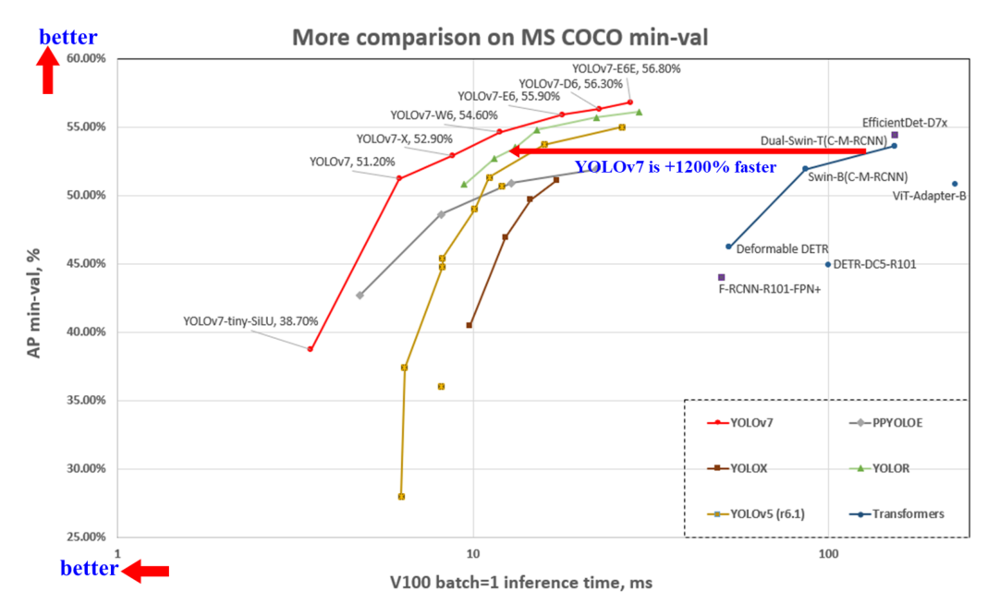
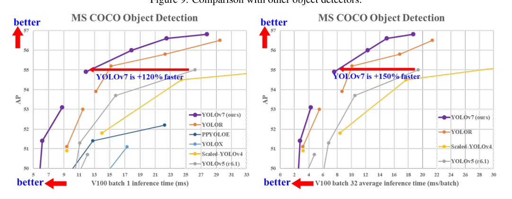
| 모델 (Model) | 정밀도 (Precision) | IoU 임계값 (IoU threshold) | $AP^{val}$ |
|---|---|---|---|
| YOLOv7-X | FP16 (default) | 0.65 (default) | 52.9% |
| YOLOv7-X | FP32 | 0.65 | 53.0% |
| YOLOv7-X | FP16 | 0.70 | 53.0% |
| YOLOv7-X | FP32 | 0.70 | 53.1% |
| 개선폭 (improvement) | - | - | +0.2% |
* meituan/YOLOv6 및 PPYOLOE와 마찬가지로, 본 모델도 더 높은 IoU 임계값을 설정하면 더 높은 AP를 얻을 수 있다.
실시간 모델인 YOLOv7-E6E의 최고 정확도(56.8% AP)는 COCO 데이터셋에서 현재 가장 정확한 meituan/YOLOv6-s 모델(43.1% AP)보다 +13.7% AP 더 높다. 또한 YOLOv7-tiny(35.2% AP, 0.4 ms) 모델은 COCO 데이터셋 및 V100 GPU, batch=32의 동일 조건에서 meituan/YOLOv6-n(35.0% AP, 0.5 ms)보다 속도는 +25% 더 빠르고 정확도는 +0.2% AP 더 높다.
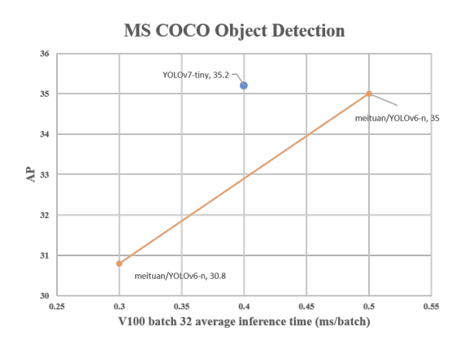
참고 문헌 (References)
본 논문은 총 100편의 참고 문헌([1]~[100])을 인용하고 있으며, 주요 기반 문헌은 다음과 같다:
- [3] YOLOv4: Alexey Bochkovskiy, Chien-Yao Wang, Hong-Yuan Mark Liao. "YOLOv4: Optimal speed and accuracy of object detection." arXiv:2004.10934, 2020.
- [13] RepVGG: Xiaohan Ding et al. "RepVGG: Making VGG-style convnets great again." CVPR, 2021.
- [15] Fast and Accurate Model Scaling: Piotr Dollár, Mannat Singh, Ross Girshick. "Fast and accurate model scaling." CVPR, 2021.
- [20] OTA: Zheng Ge et al. "OTA: Optimal transport assignment for object detection." CVPR, 2021.
- [21] YOLOX: Zheng Ge et al. "YOLOX: Exceeding YOLO series in 2021." arXiv:2107.08430, 2021.
- [23] YOLOv5: Glenn Jocher. "YOLOv5 release v6.1." 2022.
- [38] Deeply-Supervised Nets: Chen-Yu Lee et al. "Deeply-supervised nets." AISTATS, 2015.
- [39] VoVNet: Youngwan Lee et al. "An energy and GPU-computation efficient backbone network for real-time object detection." CVPRW, 2019.
- [61]–[63] YOLO v1–v3: Joseph Redmon et al. "You Only Look Once" (2016), "YOLO9000" (2017), "YOLOv3" (2018).
- [79] Scaled-YOLOv4: Chien-Yao Wang, Alexey Bochkovskiy, Hong-Yuan Mark Liao. "Scaled-YOLOv4: Scaling cross stage partial network." CVPR, 2021.
- [80] CSPNet: Chien-Yao Wang et al. "CSPNet: A new backbone that can enhance learning capability of CNN." CVPRW, 2020.
- [81] YOLOR: Chien-Yao Wang, I-Hau Yeh, Hong-Yuan Mark Liao. "You only learn one representation: Unified network for multiple tasks." arXiv:2105.04206, 2021.
- [85] PP-YOLOE: Shangliang Xu et al. "PP-YOLOE: An evolved version of YOLO." arXiv:2203.16250, 2022.